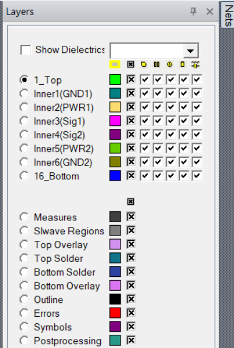

Download this example
Download this example as a Jupyter Notebook or as a Python script.
HFSS Layout UI modification#
This example shows how to modify the HFSS 3D Layout UI. 
Keywords: HFSS 3D Layout, UI, user interface.
Perform imports and define constants#
Perform required imports.
[ ]:
import sys
import tempfile
import time
from ansys.aedt.core import Hfss3dLayout
from ansys.aedt.core.examples.downloads import download_file
Define constants.
[ ]:
AEDT_VERSION = "2025.2"
NUM_CORES = 4
NG_MODE = True # Open AEDT UI when it is launched.
Check if AEDT is launched in graphical mode.
[ ]:
if not NG_MODE:
print("Warning: This example requires graphical mode enabled.")
sys.exit()
Download example board.
[ ]:
temp_folder = tempfile.TemporaryDirectory(suffix=".ansys")
aedb = download_file(source="edb/ANSYS-HSD_V1.aedb", local_path=temp_folder.name)
Launch HFSS 3D Layout#
Initialize AEDT and launch HFSS 3D Layout.
[ ]:
h3d = Hfss3dLayout(aedb, version=AEDT_VERSION, non_graphical=NG_MODE, new_desktop=True)
h3d.save_project()
Net visibility#
Hide all nets.
[ ]:
h3d.modeler.change_net_visibility(visible=False)
Show two specified nets.
[ ]:
h3d.modeler.change_net_visibility(["5V", "1V0"], visible=True)
Show all layers.
[ ]:
for layer in h3d.modeler.layers.all_signal_layers:
layer.is_visible = True
Change the layer color.
[ ]:
layer = h3d.modeler.layers.layers[h3d.modeler.layers.layer_id("1_Top")]
layer.set_layer_color(0, 255, 0)
h3d.modeler.fit_all()
Disable component visibility#
Disable component visibility for the "1_Top" and "16_Bottom" layers.
[ ]:
top = h3d.modeler.layers.layers[h3d.modeler.layers.layer_id("1_Top")]
top.is_visible_component = False
[ ]:
bot = h3d.modeler.layers.layers[h3d.modeler.layers.layer_id("16_Bottom")]
bot.is_visible_component = False
Display the layout#
Fit all so that you can visualize all.
[ ]:
h3d.modeler.fit_all()
Release AEDT#
[ ]:
h3d.save_project()
h3d.release_desktop()
# Wait 3 seconds to allow AEDT to shut down before cleaning the temporary directory.
time.sleep(3)
Clean up#
All project files are saved in the folder temp_folder.name. If you’ve run this example as a Jupyter notebook, you can retrieve those project files. The following cell removes all temporary files, including the project folder.
[ ]:
temp_folder.cleanup()
Download this example
Download this example as a Jupyter Notebook or as a Python script.